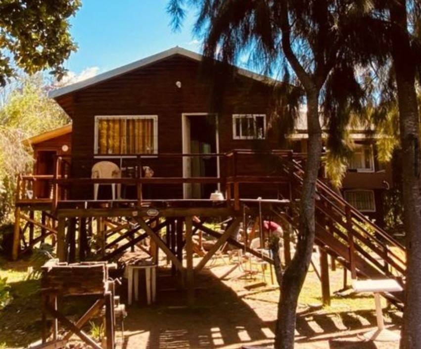
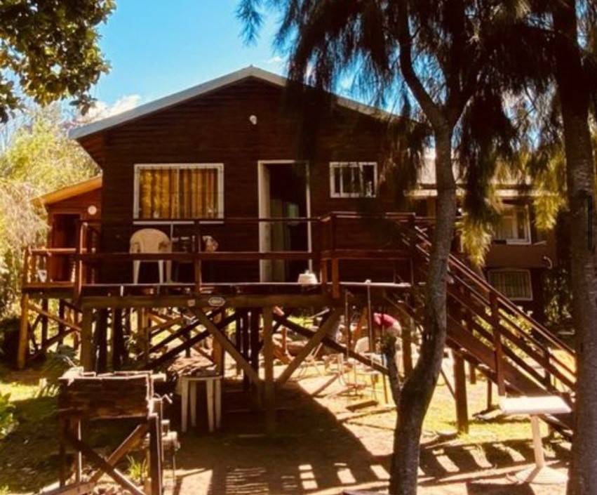

Tu lugar para desconectar
Imaginá despertar con el canto de los pájaros, sentir la brisa del bosque en la piel y dejar que el ruido de las olas del río acompañe tus momentos de descanso. Así se vive en nuestro complejo: un espacio pensado para que te relajes, te conectes con la naturaleza y disfrutes de cada instante.
En nuestro rincón del mundo, la tranquilidad no es un lujo, es parte del paisaje. Cada detalle fue creado con amor para que te sientas como en casa, rodeado de montañas, árboles y buena energía. Ya sea en pareja, con amigos o en familia, queremos que vivas una experiencia auténtica, simple y profunda.
Esto no es solo una estadía: es una invitación a parar, respirar y reconectar.
¡Te esperamos para que descubras la magia de este lugar!
Nuestra escencia
Somos Valentín y Valentina, una pareja apasionada por la vida al aire libre, el aire puro y los pequeños grandes momentos que se viven en contacto con la naturaleza. Así nació nuestro negocio familiar: un espacio pensado y creado con amor, dedicación y mucha buena energía, donde cada detalle invita a la tranquilidad y al descanso.
Creemos que cada persona merece un lugar donde pueda desconectarse del ritmo acelerado de la rutina y reconectar con lo esencial: el silencio, el paisaje,el aire fresco y la paz interior. Por eso, trabajamos juntos día a día para brindarte una experiencia única, cálida y auténtica.
 

Nuestros huéspedes
Si todavia no te decidis, te dejo nuestras reseñas aquí